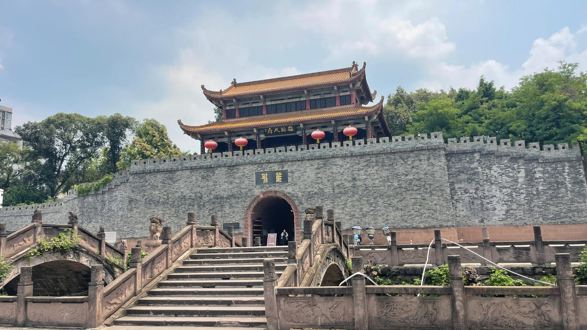
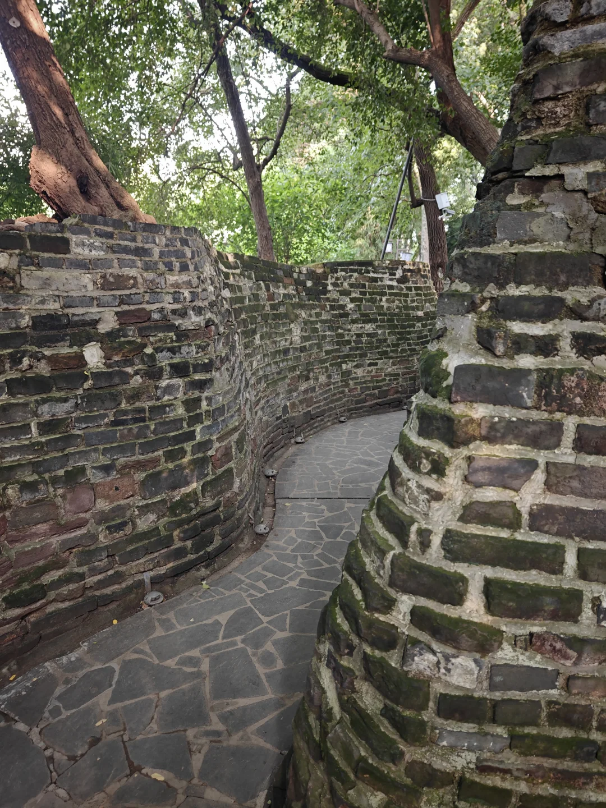

城墙遗存
留意夯土层、包砖与城门段，理解汉代城墙的营造方式。

雒城是汉代雒县治所所在地。考古发现的“雒城”“雒官城墼”铭文砖，结合夯土层器物与钱币，确认了东汉城址的性质。这里也曾是广汉郡、益州治所，并在三国时期成为刘备入蜀战争的重要节点。
遗址的价值不在宏大的复原场面，而在真实城墙遗存、铭文物证与后世城市生活相互叠合。三国故事可以帮助理解地方记忆，但现场观看应以考古遗存本身为重点。
留意夯土层、包砖与城门段，理解汉代城墙的营造方式。
篆书铭文是确认遗址年代与性质的核心物证。
围城、庞统与张任故事长期塑造了雒城的文化形象。
汉代城址、唐代湖池、宋代文庙及后世碑刻可在步行中串联。
从城门与墙体的关系建立遗址方位。

靠近观察材料颜色、接缝与表面肌理，不以单张照片判断年代或工法。
遗址可能因保护修缮调整开放范围，请以现场公告和实时地图为准。 本页不提供实时客流、班次或余票承诺。